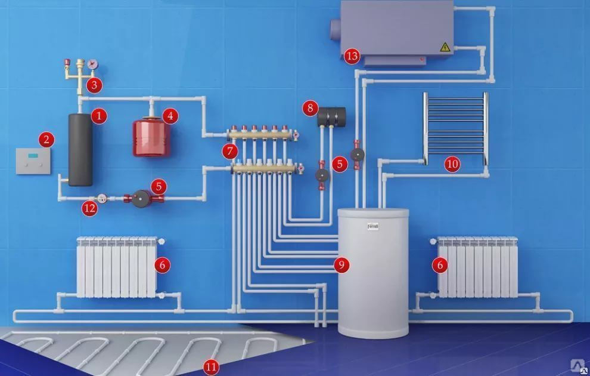

Установка и замена батарей отопления

Сейчас существуют различные отопительные системы по типу, назначению и тепловой мощности, основное отличие заключается в разводке труб от коллектора:
1 однотрубная — все радиаторы подключаются последовательно, отключать отдельные нельзя,
2 двухтрубная — радиаторы можно отключать независимо друг от друга,
3 лучевая — каждый радиатор подключается к коллектору отдельно, его можно отключать и регулировать нагрев отдельно.
Последний вариант становится все популярнее, так как позволяет не только регулировать температуру в разных помещениях, но и сэкономить деньги при установке счетчиков тепла.
Что можно сделать?
Чаще всего монтаж отопления в Казакстане требуется по следующим причинам:
а) из-за накипи старые батареи уже не греют, как раньше,
б) изношенные трубы текут и не проводят теплоноситель,
в) старые батареи не вписываются в интерьер.
Наши специалисты помогут вам рассчитать необходимое количество батарей (иногда нужно просто добавить пару новых радиаторов), выбрать подходящее по дизайну и конструкции оборудование, составить схему и, наконец, установить и смонтировать все это в квартире. Квалифицированный монтаж водяного отопления в квартире поможет вам наслаждаться теплом в любое время года, обезопасит от протечек и неожиданных аварий.
Этапы монтажа отопительного оборудования
Для простоты допустим, что у вас уже есть проект теплоснабжения, необходимое оборудование (радиаторы, трубы, фитинги, изоляция), нужно только установить его в квартире. Позвоните нам и обрисуйте задачу. Наш менеджер задаст вам несколько вопросов, чтобы прояснить объем работы и сделает примерный расчет стоимости отопления в вашем случае. Примерный, потому что окончательная стоимость будет понятна уже на месте, после измерения длины труб, количества соединений и выяснения других деталей.
Профессиональные работы по отоплению всегда начинаются с анализа проекта на месте. Далеко не всегда можно реализовать запланированный проект, но можно максимально приблизиться к желаемому результату с минимальными затратами. Например, трубы могут не подходить для теплоносителя в вашем доме, тогда их придется заменить, а вместе с ними и фитинги. Или выбранные красивые радиаторы окажутся слишком слабыми, во избежание протечек мы рекомендуем усилить или заменить и их тоже. Наша монтажная организация по отоплению предоставляет гарантию на все проводимые работы, потому что мы заботимся о вашей безопасности.
Демонтаж старой системы и установка новой
Сначала нужно убрать старые трубы, иногда заменить стояк, снять и вывезти старые радиаторы. Уже после того, как все подготовлено и очищено от строительной пыли, можно смонтировать отопление заново. Сначала устанавливаются радиаторы, при этом нужно следовать следующим правилам:
а) — не менее 10-12 см от пола,
— не менее 5 см от стены,
— не менее 10 см от подоконника (а, как правило, батареи ставятся под окнами).
Соблюдать эти требования необходимо для правильной циркуляции воздуха в помещении. Эти же параметры нужно учитывать при выборе батарей, особенно если вы живете в старом доме с нестандартными размерами окон, стен и подоконников.
Как правильно закрепить радиаторы? Если у вас нестандартные стены (с полостями, гипсокартонные перегородки), то наш мастер по отоплению сразу порекомендует выбрать другое место для размещения. Радиаторы очень тяжелые, особенно с теплоносителем, поэтому крепление должно быть жестким и надежным.
Затем можно подводить трубы к радиаторам. Наши услуги по монтажу отопления включают:
1 оценку качества труб и соединительных фитингов на предмет пригодности к использованию в каждом конкретном случае,
2 сверление отверстий в стенах для подводки труб
3 заделку труб после монтажа,
4 крепление труб к батареям и стене,
5 установку фитингов и необходимой арматуры.
После установки всех необходимых креплений проводится пробный пуск системы для проверки герметичности и работоспособности всех соединений и узло
Сколько стоит монтаж отопления?
Сейчас расценки на монтаж отопления начинаются от 700 рублей за одну секцию (если вам нужно просто поменять батареи). Если нужно проверить проект, проложить трубы, поменять стояк, добавить в схему теплый пол или плинтусное отопление, стоимость увеличится, причем иногда существенно.
Основные статьи расходы при монтаже:
установка индивидуального котла — зависит от марки, мощности и помещения,
прокладка труб — зависит от длины, количества стен и перегородок,
замена батарей — зависит от количества и качества секций, наличия креплений,
монтаж труб и фитингов — зависит от количества и сложности,
монтаж датчиков, насосов, клапанов и другого оборудования — зависит от сложности техники и количества.
Справедливые цены на монтаж отопления напрямую зависят от квалификации и количества мастеров, требуемого времени и ваших пожеланий. В нашей компании вы можете заказать монтаж отопления недорого и качественно, так как наш опыт позволяет предусмотреть возможные проблемы и решить их заранее, сократив ваши и свои временные затраты. Позвоните сейчас, и мы договоримся о визите мастера, сориентируем по ценам и расскажем, какие подводные камни могут вас ожидать.